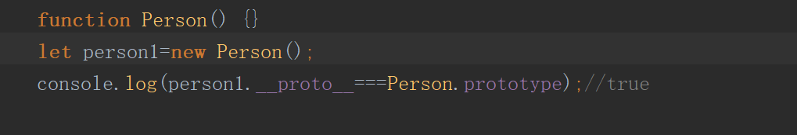
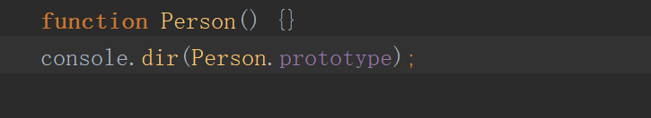
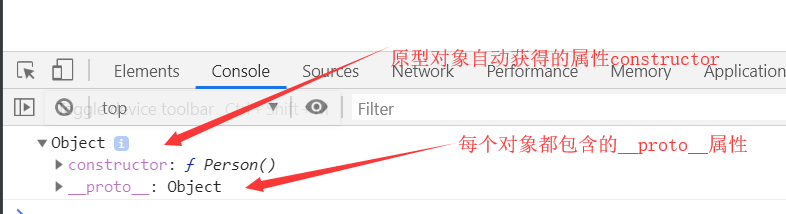
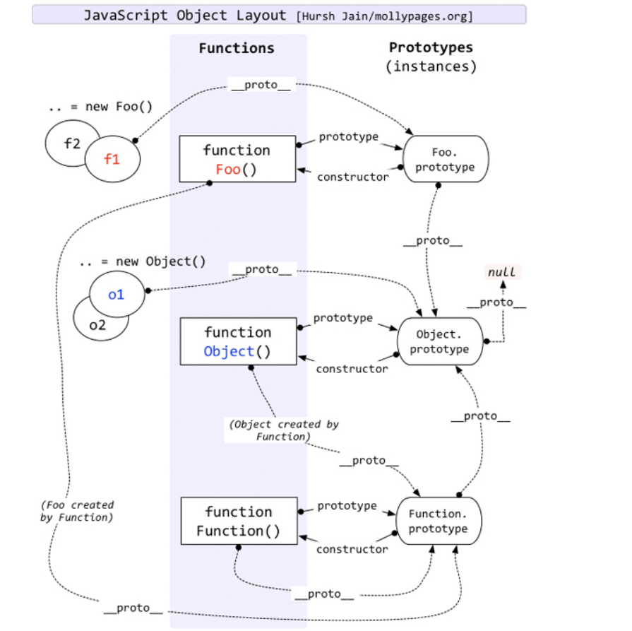

一、__proto__
对象内部存在一个指针，用来指向上一层函数的原型对象。ECMA-262第五版中关这个指针叫[[prototype]],但Firefox、Safari和Chrome在每个对象上都支持一个属性__proto__,这也就是网上说的‘每个对象都有一个__proto__属性’的原因。

二、prototype
prototype为函数对象的一个属性。无论什么时候，只要创建了一个新函数，就会根据一组特定的规则为该函数创建一个prototype属性。且属性指向该函数的原型对象。
三、原型对象
原型对象通过‘构造函数.prototype’可以得到。创建自定义的构造函数之后，其原型对象都会自动获得一个constructor属性，这个属性是一个指向prototype属性所在函数的指针；其他方法都是从Object继承而来的；

在浏览器中打印出来的结果为：

四、结尾
